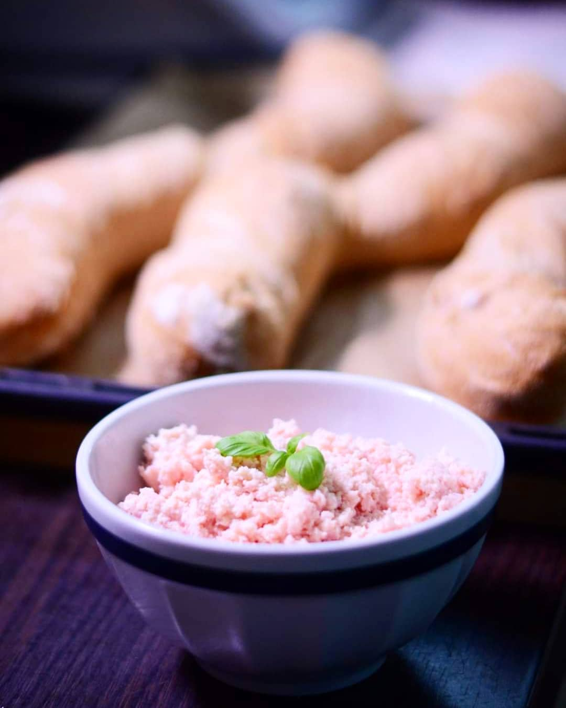

Rustikální bagety a šunková pěna z Cookidoo! Snídaně, svačina nebo večeře pro ty malé hladové krky, co teď máme pořád doma, úplně ideální 😉
Recept na FB:
https://m.facebook.com/story.php?story_fbid=1130745234017104&id=680191302405835
#thermomix #TM6 #cookidoo #foodinspiration #hammousse #baguettes #homemade #food #homebaker #instafood #foodinsta #foodpics #thermomixmade #pripravenovthermomixu #bagety #sunkovapena #varenislehkosti #vareninadotekprstu #sthermomixemtozvladnekazdy #domaci #pecivo #jidlo #sthermomixemmuzevaritopravdukazdy @thermomix_cz_official